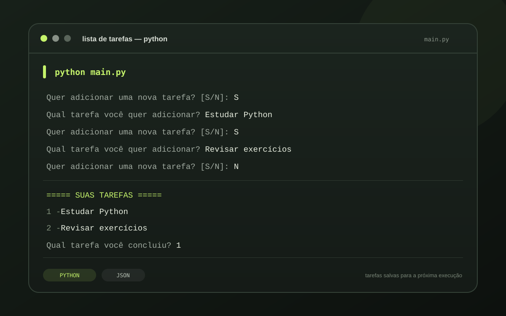
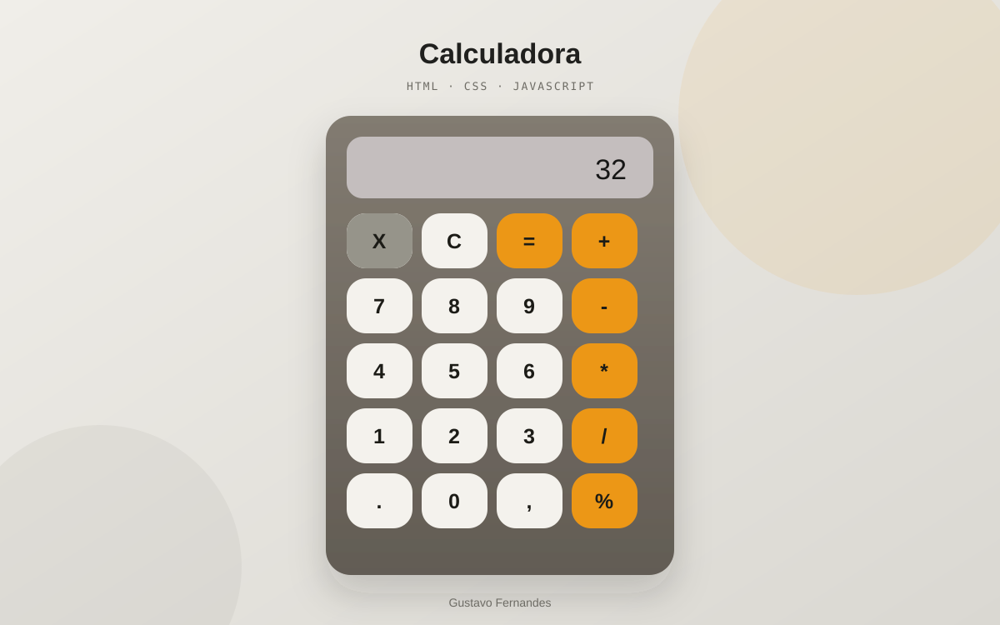

PYTHON
Lista de tarefas
Projeto em Python que permite criar listas de tarefas.
ESTUDANTE DE ENGENHARIA DE SOFTWARE
Estudante da UNOESTE, com projetos em Python e JavaScript e interesse em oportunidades na área de tecnologia.
Estou no segundo período de Engenharia de Software na Universidade do Oeste Paulista (UNOESTE) e busco uma oportunidade de estágio ou emprego. Tenho boa comunicação, flexibilidade de horários, proatividade e uma base sólida em lógica de programação. Também gosto de fazer networking e aprender com novas conexões.
Projetos pessoais desenvolvidos durante meus estudos.

PYTHON
Projeto em Python que permite criar listas de tarefas.

JAVASCRIPT
Projeto de calculadora desenvolvido em JavaScript.
Universidade do Oeste Paulista (UNOESTE) · Graduação
Escola Cooperativa · Concluído
LINGUAGENS, FERRAMENTAS E CONHECIMENTOS
IDIOMAS
CURSOS E CERTIFICADOS
Instituto IFMG
Plataforma Curso em Vídeo
EM BUSCA DE UMA OPORTUNIDADE?